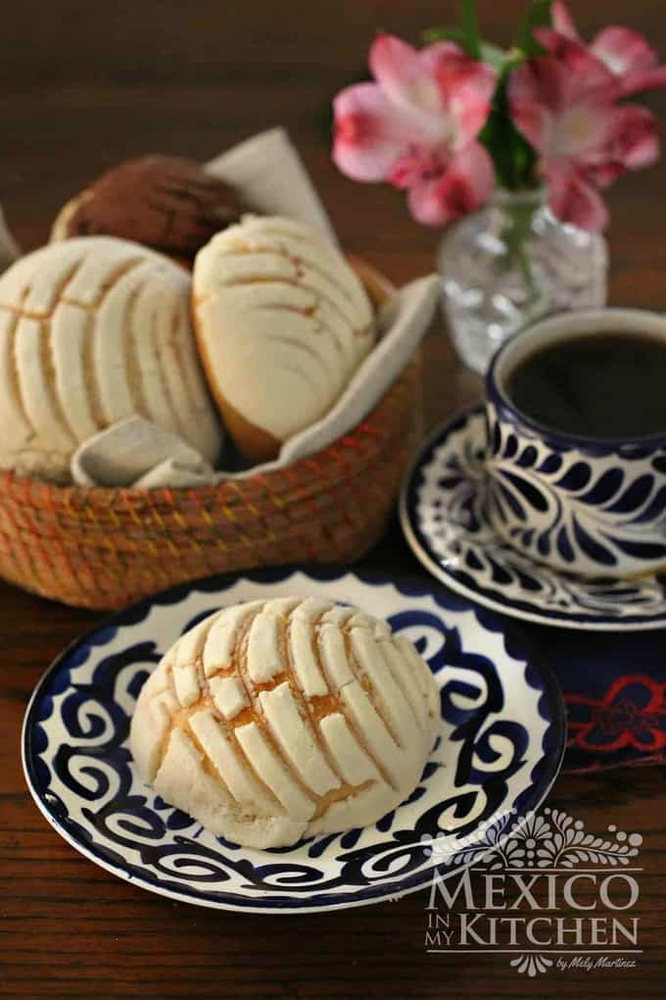

Conchas

Description
Among all the different kinds of traditional Mexican Pan Dulce (“sweet bread”), Conchas are without a doubt the most popular and recognizable. While concha in English translates to seashell. Makes sense given that conchas look like seashells!
This Mexican bread is made of a fluffy, butter brioche-like dough topped with a streusel topping that is scored. These colorful Mexican breakfast item is a crowd favorite.
Ingredients
- 500 grams All-Purpose Flour
- 125 grams Sugar
- 7.5 grams Rapid Rise (or Quick Rising) Instant Yeast
- 3 grams Salt
- 100 grams Non-Salted Butter at room temperature
- 100 ml eggs
- 5 ml Vanilla extract
- 120 ml of Milk
Topping
- 100 grams Vegetable Shortening
- 100 grams Confectioner Sugar
- 120 grams All-Purpose Flour
- 5 grams Cocoa powder for half of the topping
- 5 grams Cinnamon
Instructions
- Mix the all-purpose flour, yeast, sugar, and salt in the bowl of a stand mixer at medium speed, just to mix it well.
- Add the butter and mix well, then mix in the eggs and vanilla extract and slowly pour the milk in little by little until the dough looks cohesive (you may need less or more milk, as some flours soak up more liquid than others). Keep beating the mixture for about 7 minutes at medium speed. Add a little more flour around the inside of the bowl (2-3 tablespoons), just enough for the dough to separate from the container. The dough should be soft and slightly sticky.
- YOUR DOUGH SHOULD FEEL VERY SOFT AND ELASTIC.
- Place the dough on your floured working table and knead it just enough to shape it into a ball.
- Place this ball in a large greased bowl to rest. Cover it with plastic wrap (or wax paper) and a kitchen napkin. Let the dough rest in a warm place for about 2 hours until it doubles in size.
Topping
- While the dough is rising, you can prepare the sugar topping. Soften the shortening with your spatula until it is very creamy, and then add the confectioner's sugar. Finally, add in the flour little by little (if using, add the ground cinnamon in this step). Set this paste aside to use later. If you're making half of the Conchas with the chocolate topping, then divide the paste in two and add the cocoa powder to one half, mixing it until it integrates very well.
- Once the dough has risen and doubled in size, place it onto a floured surface and let it rest for about 5 minutes. Divide the dough into 16 small balls (60 grams each). To shape the balls, lightly flour your hands and place each small ball on the working surface and gently press down with your hand, rotating your hand to form the balls.
- Place them onto greased baking sheets and continue until you've finished shaping all of the dough.
- Using your hands, grease the top of each ball with a little shortening. Do not skip this step, as it will help the topping adhere to the dough.
- To add the topping, flour your hands and divide the topping paste into 16 balls. Use your hands to press down on each one to form a small, flat circle. Place this disk onto the ball of dough, and press it down very firmly.
- Once you've finished placing the topping on the buns, use a concha cutter or a knife to decorate them with the traditional concha shape.
- Allow the conchas to rise in a warm place until they are almost double in size. Depending on the temperature of your kitchen, this step could take anywhere from 1 to 2 hours. Do not leave them to rise any longer, because if you let them grow too much they will collapse inside the oven. Bake in a preheated oven at 325º degrees for 20 minutes, or until the bottom of the conchas are lightly golden.